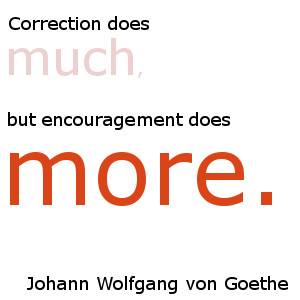
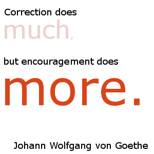

About Us
Books Matters, Mann!
123 Pretend Street, Pretenderton, WA, 6210
Phone: 9123 8765
Email: admin@bmm.com.au
Romeo and Juliette embraced their love of fiction and opened 'Books Matters, Mann!' in 1999, and it has been a family business ever since. Romeo and Juliette were both avid readers, seeking to read as many books, from as wide a variety of genres as they could. After many years of fulfilling this dream, they came up with another dream. To share the wonderful world of fiction with as many people as they could. 17 years down the track and 'Books Matters, Mann!' is still fulfilling this dream. BMM is a small business with a big heart. BMM provides homes for both new and used books. All of our used books are traded to us by our loyal customers in exchange for credits, which they can use online or in store to purchase from our wide range of books. We also stock new books from a diverse range of authors so that they too may find a welcoming home. BMM is also a proud donator of used books to local schools, where students of all ages may enjoy the stories they have to tell. For every 10 books that are purchased from BMM, online or in store, we donate 1 used book to a public school. Over 4000 books have already been generously donated to this date. Our staff members all share Romeo and Juliette's love for books and their dream to share the world of fiction. It is through their hard work and dedication that BMM is still able to continue striving to fulfill this wonderful dream.